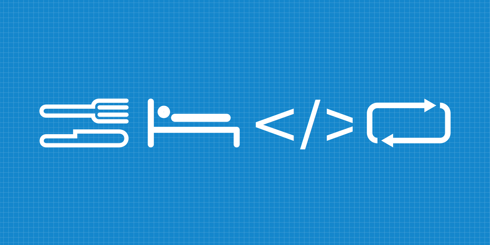
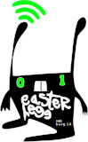
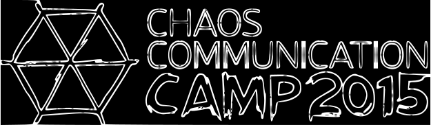

Unsere Events:
Maker Challange
Wir waren auf der Maker Faire Friedrichshafen. Auf dieser Messe fand auch eine CHallange Statt bei der wir mitgemacht haben, die Maker-Challang.
Die Aufgabe war einen Lichtschalter zu drücken der an einer Holzsäule befestigt war. Natürlich nicht von Hand sondern mit etwas Technischem.
Diese Aufgabe war schon vorher bekannt so dass man sich überlegen konnte was man noch alles braucht oder was man überhaupt machen möchte.
Wir haben uns mit 2 Teams angemeldet und das eine hat mit einem Fenstermotor den Schalter gedrückt, der sich nur dann bewegt hat wenn man die richtige Melodie (Tetris) auf einem Keyboard gespielt hat.
Das andere Team von uns hat den Schalter mit Hilfe einer Rohrpost gedrückt. Um diese zu aktivieren musste über den IRC channel see-base auf hackint.org !licht geschrieben werden, dann hat ein Raspberry Pi einen
Staubsauger angemacht, der dann eine Kapsel durch ein Rohr gepustet hat, die dann auf den Schalter geprallt ist und den Ausgelöst hat.
Die preise die es dafür gab sind für uns Ziemlich Ordentlich ausgefallen. Es gab 200€ pro Team dafür, dass man den Schalter gedrückt hat und jeweils noch 100€ für extraleistungen wie sehr Technisch aufwendig oä.
Wir haben insgesammt 700€ abgeräumt, 400€ für das Schalterdrücken und noch jeweils 100€ für das Technisch aufwendigste, den Teamfavoriten und das Kreativste.
Wir waren allerdings auch als freifunker auf der Maker Faire.
Gulasch Programier Nacht

Easterhegg

Chaos Communication Congress

Chaos Communication Camp
